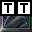
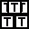

Tilez) array. I gave cluez as to where the solver should head as soon as the Silver Timer Switch
Tilez) array. I gave cluez as to where the solver should head as soon as the Silver Timer Switch  (STS) was pressed, and just before the solver could possibly arrive there, the next direction to take. While the solver moved from the STS to the first safe Tile in the SPM, I flashed "GooRoo" both raised and depressed. Complicated stuff!
(STS) was pressed, and just before the solver could possibly arrive there, the next direction to take. While the solver moved from the STS to the first safe Tile in the SPM, I flashed "GooRoo" both raised and depressed. Complicated stuff!The messy result.

Can you tell where I made the changez to fix the problemz? (Five logicz can be easily seen.)
Well, I lost track of what I was doing somehow, and really bolloxed the SPM! Then I discovered what a hard row to hoe I had created for myself in the manner in which I placed the SPM logicz. I had absolutely no way of telling what happened in sequence #1, or #2 or any sequence, because there was no pattern in the logicz per Tile. Painfully, I worked out a solution. The solution is now rule #1 in my Custom Level designing.
If a puzzle is on a 48 X 48 map, then the x values range between 0 and 47, as do the y values. The (impractical) limit of a Gruntz map is 256 X 256. That is 65,536 Tilez to place! (Now, each Tile is 32 X 32 pixels. Remember that ... it is part of my solution.) And the possibility of hundreds of thousands of logics, if one did something (sometimes more than once) on every Tile!
What I have acquired as a habit in my Custom Level (CL) designing is to ensure that logics have a logical pattern to their placements. Remember, Tilez are numbered from 0 to (width - 1 ... or height - 1), and Tile Height and Width are both 32.
Let's set some mathematical terminology:
x is the horizontal Tile number;
y is the vertical Tile number;
X is the pixel number on the horizontal plane.
Y is the pixel number on the vertical plane.
A logic marker is 16 X 16 pixels in size, so the middle of a logic is at relative 8,8.
GooRoo's logic placement rulez:
X=8, Y=8 is the basic pixel address from which to relate all Tile pixel addresses.
| Beginning with just a single Silver Pyramid: | |
|---|---|
| Add Logic #1: X = 8 + 32x Y = 8 + 32y | |
| Add Logic #2; X = 24 + 32x ... (8 + 32/2 = 8 + 16 = 24) Y = 8 + 32y |
 |
| Add Logic #3; X = 8 + 32x Y = 24 + 32y |
|
| Add Logic #4; X = 24 + 32x Y = 24 + 32y |
|
| Add Logic #5; X = 16 + 32x Y = 16 + 32y |
|
Give it up! You're likely in 'way over your head! But if you must have 6 or more logicz on a single Tile, you might want to consider this:
| Add Logic #5a; X = 16 + 32x Y = 8 + 32y (upper center of the Tile) |
 |
|---|---|
| Add Logic #6; X = 8 + 32x Y = 16 + 32y (center left of the Tile) |
|
| Add Logic #7; X = 24 + 32x Y = 8 + 32y (center right of the Tile) |
 |
| Add Logic #8; X = 8 + 32x Y = 24 + 32y (bottom center of the Tile) |
|
What I also do is to do a "CalcCowID" on every single logic I place in the level. Every one! That is where I am able to so precisely align my logicz; where you see under "Location" there are titles of X:, Y: Z:, etc. with an entry box following each one. Do not be concerned with Z: or anything else in that box; but fill in the values you calculated for X and Y in (you guessed it) the X: and Y: entry fields. It is then easy to get into the habit of doing CalcCowID to finish the process.
A similar maze from SecretSoduko1. You can follow the path by multiple logicz on certain Tilez.

What I have described isn't going to help you create SPMz ... but it will certainly help when you mess up somewhere, and need to find out where you went wrong!
So now let's discuss entering valuez into those logicz, now that we know that we can tell in what sequence they will operate.
First, you need to consider the equipment the Grunt you intend to negotiate the maze is going to have, since it may be a determining factor in how quickly those Silver Pyramidz should change state.
Most Gruntz travel at 600 millisecondz per tile ... a (very) few faster than that ... a few more slowly than that.
For a 'straight line' path (as in ImaginIceon ... lower right-hand quadrant) with a Grunt with a lit Bomb
{kind=link}
 , the timing can be as little as 200 millisecondz (from top to bottom, in this example) for each successive logic. Since there is only one sequence involved, all of the logicz are placed in the upper left-hand corner ... not much can go wrong.
, the timing can be as little as 200 millisecondz (from top to bottom, in this example) for each successive logic. Since there is only one sequence involved, all of the logicz are placed in the upper left-hand corner ... not much can go wrong.Most Gruntz, however, fall into the 600 millisecond category, so each successive tile (if altering sequentially) would have an additional 600 millisecondz in the "Points:" field ... perhapz a bit more, in consideration of the poor solver.
When the Grunt must also pick up some object (Coin, Tool, Toy or Powerup) additional delay is required before the next logic action happenz.
Whatever you do ... TEST the timing of the maze ... frequently! I (now) use a temporary Grunt (properly equipped) at the Silver Timer Switch, and walk him through the maze every time I add about five logicz ... and as soon as I add something he has to pick up ... or break ... or dig up! That way, I don't have so many logicz to be corrected, to make the maze solvable.
Remember that certain Gruntz move even more slowly ... as when carrying the Warpstone piece ... and need more time.
I can think of a rather tricky timing problem (both for the solverz AND for the Designer!) ... a change of Grunt movement speed in the middle of a Silver Pyramid maze. For example, a Springz Grunt enterz the maze, and there is a Spikez tile he cannot avoid in the path (such as a Hole before the Spikez

 ... or two consecutive Spikez tilez ), so that he beginz at 800 millisecondz per tile, then jumpz (in 800 millisecondz) onto the Spikez where he losez his Springz, and continuez at 600 millisecondz per tile.
... or two consecutive Spikez tilez ), so that he beginz at 800 millisecondz per tile, then jumpz (in 800 millisecondz) onto the Spikez where he losez his Springz, and continuez at 600 millisecondz per tile.If your maze has the solver turning several cornerz, build in some 'slack time' for the human delay of recognizing that the next move is not straight ahead in the direction s/he was already going.
And it is definitely 'not nice' to design in false leadz dozenz of stepz into a very large maze ... unless you take the time to run the entire maze through at a rate impossible for any Grunt to move, showing what will happen, before you actually allow the Grunt to make the attempt.
In other wordz, 100 to 400 millisecond changez (too fast to move), followed by some sort of "now get ready ... here comez the real thing" signal.
I have memorized the following 25 pixel valuez, and can now quickly 'force' a logic to my desired location:
| 8 40 72 104 136 168 200 232 264 296 328 360 392 424 456 488 520 552 584 616 648 680 712 744 776 |
808 | 1608 | 2408 |
|---|
Since 776 + 32 = 808 ... the valuez repeat every 800 pixelz (25 tilez) and 25 valuez are all you need to memorize.
That coverz X and Y Tilez from 0 through 24; higher X and/or Y Tile numberz require adding 800 (or 1600, or 2400) to these 25 valuez to locate a logic in the upper left-hand corner of a Tile.
Add 16 to an X value to place the logic in the right half, instead of the left half.
Add 16 to a Y value to place the logic in the bottom half, instead of the top half.
Add 8 to both X and Y to place the logic in the center of the tile ... as for InGameIconz.